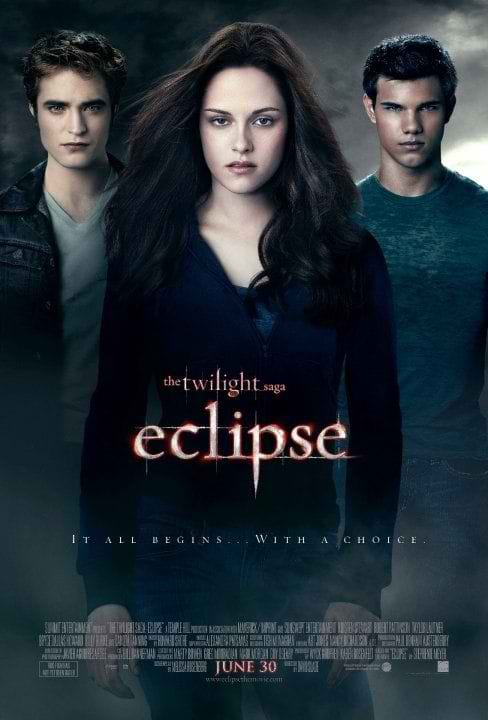
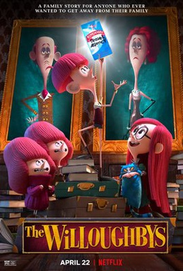
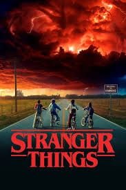
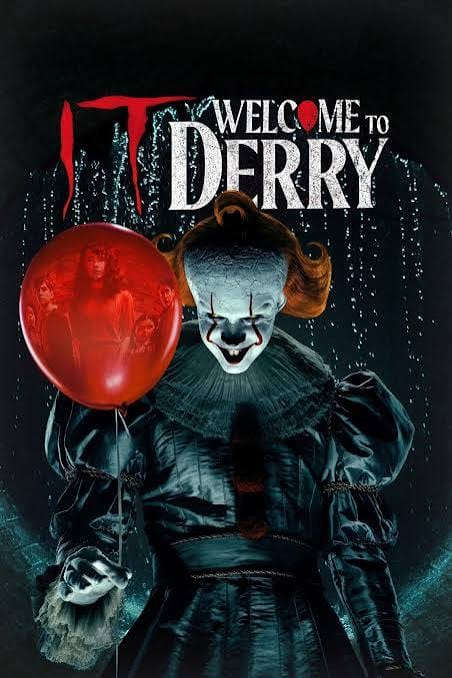
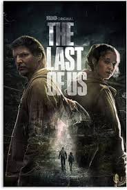

Here are five movies I enjoy, each for its own unique story, characters and entertainment value.

I enjoy this movie because of its supernatural elements, emotional tension and complicated relationships. The love triangle between the main characters adds another layer of drama and suspense that makes the story particularly entertaining.

I like this movie because of its message about family and belonging. It explores the idea that family does not have to be defined by blood, but can instead be built through love, care and meaningful connections.

I enjoy Stranger Things for its combination of supernatural mystery, horror, adventure and friendship. The characters, storyline and unexpected twists make it especially entertaining. It is also a series I have fond memories of watching with a friend, which makes it even more special to me.

I enjoy Welcome to Derry for its eerie atmosphere, horror elements and mysterious storyline. I like how it explores the darker history of Derry and builds suspense. Watching it with a friend has also made the experience more memorable.

What draws me to The Last of Us is its post-apocalyptic setting and its portrayal of a world transformed by a devastating outbreak. I enjoy the survival elements, the atmosphere and the challenges of navigating a world where humanity is struggling to survive.